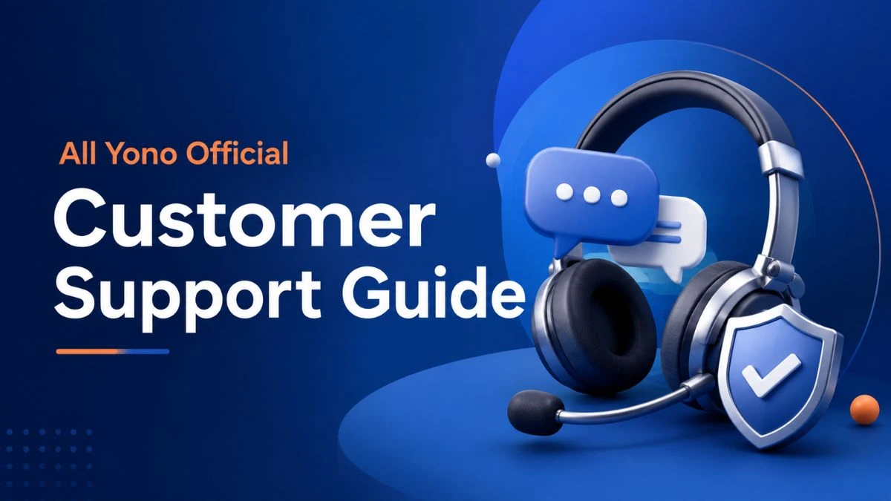

All Yono Official Customer Support and Contact Guide

Looking for All Yono Official customer support can be confusing when different websites, messages, social accounts, and forwarded posts show different contact details.
The main thing is not to rush.
A support route should help you understand an issue or guide you toward the correct next step. It should not pressure you to share private account details, passwords, OTPs, PINs, payment information, or personal documents.
This guide explains how to approach All Yono Official contact information more carefully, how to verify a support route before using it, and when it makes sense to use this website's contact form.
Start With the Source You Already Use
When you need help with an account, app setting, technical issue, or access concern, begin with the verified source you are already using.
For example, if a verified app includes a Help, Support, Contact, or FAQ section inside its interface, that is usually a better starting point than using a number or chat link found in a forwarded message.
Be careful with contact details posted in Telegram groups, comment sections, social media replies, search-result snippets, or random blogs. A familiar name does not automatically make a contact method genuine.
Before contacting anyone, compare the details with a source you have already verified. You can also read our guide on how to check an All Yono Official link safely before following a support link shared online.
How to Verify All Yono Official Contact Information
All Yono Official contact information should make sense in context. A contact method found inside a verified app or clearly displayed through a source you trust carries more weight than a number copied from an unknown message.
Use the table below as a quick reference before reaching out.
| Contact Source | What to Review | Safer Next Step |
|---|---|---|
| In-app Help or Support area | Whether the option appears inside the verified app | Use the support route shown there |
| Website contact details | Whether the domain and page have been verified first | Check the source before submitting information |
| Social media account | Account history, consistency, and suspicious reply activity | Avoid sharing private account details through DMs |
| Forwarded number or chat link | Whether the sender can prove where it came from | Do not treat it as official without verification |
| Incoming support call | Whether the caller requests private information or urgent action | End the call if the request feels suspicious |
A contact route does not become trustworthy just because it uses the words "official support." Take a moment to verify where it came from, what it is asking for, and whether it matches a source you already recognise.
Is There an All Yono Official Support Number?
People often search for an All Yono Official support number when they need quick help. However, a number appearing in a search result, message, group post, or social comment should not be treated as confirmed support information without further checks.
This website does not publish or verify a universal phone support number for account-related concerns.
If you see a number claiming to provide support, do not share your password, OTP, PIN, account recovery code, payment details, or identity documents. A request for private access information is a reason to pause and verify the contact route independently.
Pressure is another warning sign. Be cautious when someone says your account will close immediately, asks you to act within minutes, or tells you that you must send sensitive information to continue.
What Support Should Never Need From You
When asking for All Yono Official help, keep your personal account information protected.
Do not send passwords, OTPs, PINs, bank information, payment screenshots, recovery codes, or full identity documents through an unfamiliar number, chat, form, or social media account.
You should also be cautious with screen-sharing or remote-access requests. Giving someone access to your screen while you are signed in can expose personal details that were never meant to be shared.
A legitimate support process may ask you to describe a technical problem. It should not depend on you giving away the information used to protect your account.
Choose the Right Place for Your Question
Different concerns need different contact routes.
For account access, app settings, technical errors, or login-related questions, begin with the verified app or original service source you are using. Avoid third-party websites that claim they can recover accounts, reset passwords, or resolve access issues outside the proper channel.
For general reading, link verification, guide corrections, or questions about information published on this website, you can use our Contact Us form.
The contact form on this site is intended for website-related messages. It is not an account recovery desk, payment service, or substitute for support inside an external app.
When contacting us, explain the issue clearly but keep sensitive details private. Do not include passwords, OTPs, PINs, payment information, or identity documents in your message.
A Practical Contact Check Before You Proceed
Before using any All Yono Official customer support route, take a minute to think through the situation.
First, confirm where the contact detail came from. Next, check whether the message is creating unnecessary urgency. Then look at what information is being requested. If the request involves passwords, one-time codes, banking information, or remote access, stop and verify the source again.
This small pause can prevent a simple support question from becoming a privacy problem.
For broader guidance on common access and verification concerns, visit the All Yono Official FAQs. If your question is about a bonus or invite code rather than account access, see our referral code and invite code safety guide instead.
Final Note
All Yono Official customer support should begin with source verification, not urgency.
Use support details only after checking where they came from. Keep passwords, OTPs, PINs, payment details, and personal documents private. When something does not look right, pause before responding and review the source carefully.
For a wider view of the common scam patterns to watch for, see our is Yono app safe scam awareness guide. For more informational guides, access notes, and verification resources, visit the All Yono Official blog.
AllYonoOfficial.com does not run or own the apps listed here. The rummy app can be addictive and risky financially, so use them carefully. Only for 18+ people.
Please read our Disclaimer page and the specific disclaimer for each app.
Alert: Online money games, including rummy played for money, are prohibited in India under the Online Gaming Act, 2025. Some download links on this site are referral links.